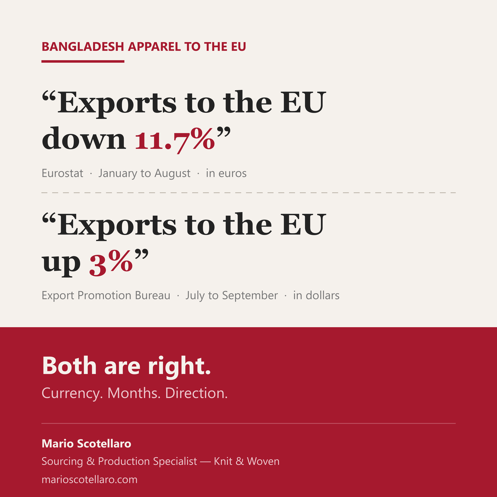

Bangladesh's garment exports to the EU: down 11.7% or up 3%? Both numbers are right.
Two days apart, Dhaka press carried both. The Financial Express reported a fall of 11.7%, from Eurostat. The Daily Star reported growth of 3%, from Bangladesh's Export Promotion Bureau. They do not contradict each other. They measure different things.
The first difference is the currency. Eurostat counts in euros, while the factories invoice in dollars. From January to August 2026 the euro averaged about 4.7% stronger against the dollar than a year earlier. Converted month by month, EU apparel imports from Bangladesh are down 7.3% in dollars, not 11.7%, and down 4.6% in tonnes.
The second is the period. The 11.7% covers January to August. The 3% covers July to September, the first quarter of Bangladesh's fiscal year: $4.90 billion against $4.75 billion a year earlier, up 3.3%.
The third is when the turn came. Month by month on Eurostat, imports from Bangladesh were below 2025 in every month from January to May, then above it in June, July and August, in dollars. July and August together are up 1.2% in dollars and 5.3% in tonnes. Part of the early drop is a high base: in January 2025 the EU brought in 58% more tonnes from Bangladesh than in January 2024.
So the same flow can produce a headline of decline and a headline of recovery within two days. Neither is wrong, and neither tells the story on its own. Before reading a trend into a headline, I check three things: which currency, which months, and which way the last few months are going.
Sources: Eurostat Comext, dataset DS-045409, HS chapters 61 and 62, data to August 2026, updated 16 October 2026 (2026 months provisional) · European Central Bank, euro to dollar reference rates, monthly averages · Export Promotion Bureau, export data July to September FY2026/27 · BGMEA, export performance, July to September FY2026/27 · The Financial Express, 18 October 2026 · The Daily Star, 16 October 2026